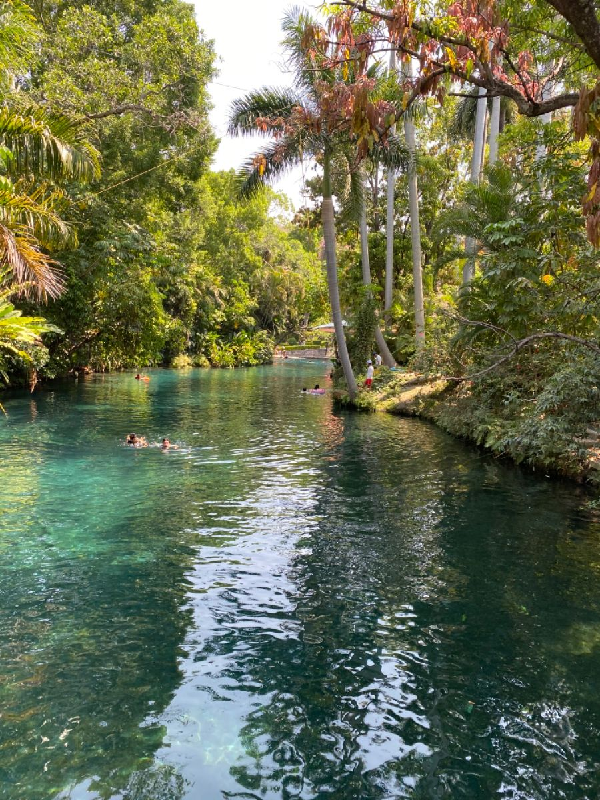
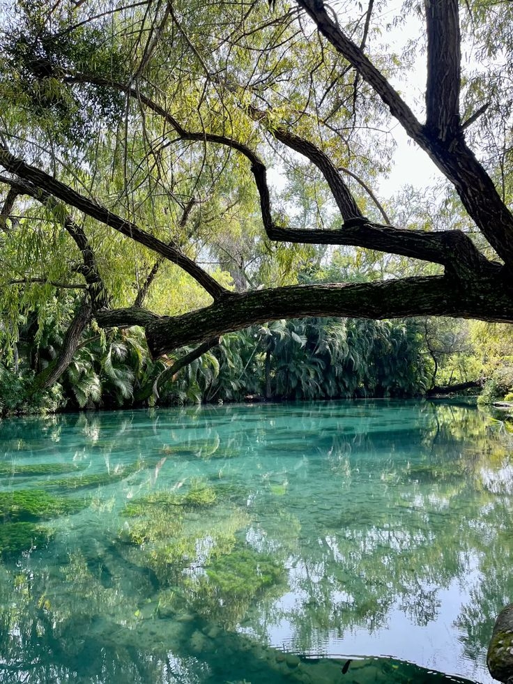

📸 Galería de Imágenes


🏊♂️ Reseña del Entorno Natural
Las Estacas es uno de los parques ecoturísticos más emblemáticos y hermosos de México. Su historia como paraje natural se remonta a siglos atrás, debiendo su nombre a las antiguas estacas que los lugareños colocaban a la orilla del río para controlar el cauce y regar sus tierras. El corazón de este edén es un espectacular manantial de agua cristalina que brota a la superficie a un ritmo de más de 7,000 litros por segundo, dando vida a un majestuoso río natural de un kilómetro de largo rodeado de una exuberante flora tropical.
Hoy en día se ha transformado en un parque natural de primer nivel que combina la conservación ambiental con la recreación. Sus aguas templadas, que se mantienen constantemente a una temperatura promedio de 26 °C, son ideales para nadar, practicar snorkel, buceo o recorrer el río en kayak y paddleboard. Además, el parque cuenta con una completa infraestructura que incluye zonas de campamento, opciones de glamping, hotel, spa y restaurantes, lo que lo convierte en un santuario perfecto para conectar con la naturaleza.